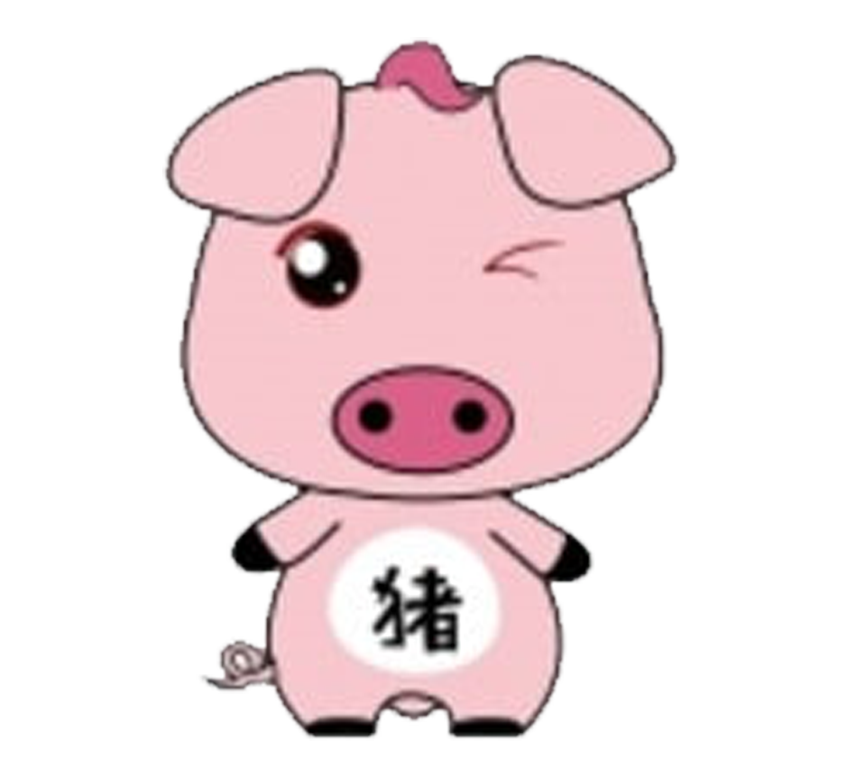

出生年份 :1947,1959,1971,1983,1995,2007
愛情運 :
属猪人2022异性缘不错，容易遇到务实，但也略冲动的异性，彼此多能相互看对眼，利于发展感情。
事业运：
属猪人2022事业上没有太多的机遇，容易和执法部门有一定的接触，但不会给自己带来什么麻烦和隐患。
财运：
属猪人2022财运上会有一些小机遇，可以凭借自身的聪明才智而获得收益，但需要多积极的去争取。
Home